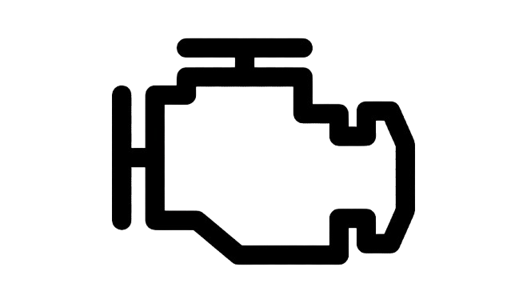
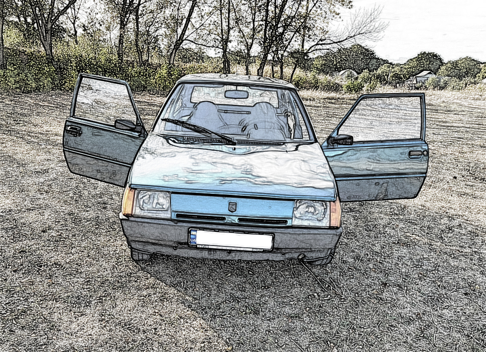
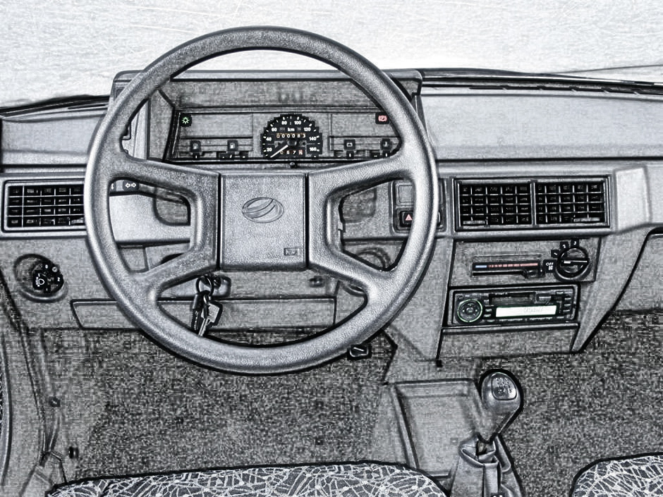
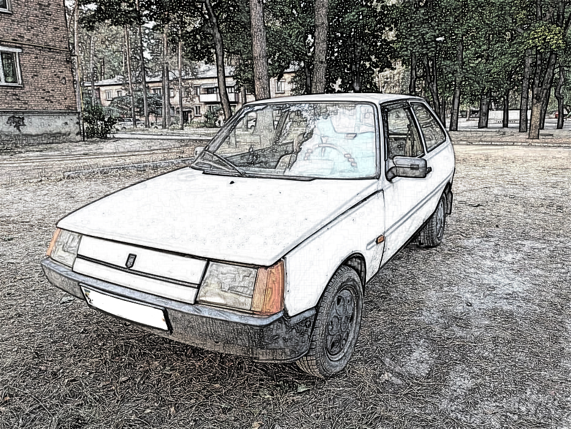

Двигун
Бензиновий, 1.1 л або 1.2 л
Привід

Передній
Кузов

Хетчбек
Коробка передач
Механічна, 4 - або 5-ступенева
Дизайн автомобіля
Кузов ЗАЗ Таврія має тип тридверного хетчбека, що став базовим для більшості модифікацій. Кузовні рішення створювалися з акцентом на практичність. Модель отримала аеродинамічний кузов, який мав мінімальний опір повітрю, що позитивно впливало на витрату пального. Прямі лінії та округлі форми зберігали баланс між сучасним на той час виглядом і виробничими можливостями заводу.
Внутрішній дизайн «Таврії» був простим, але практичним, відповідав потребам автомобілів того часу. Ключовим завданням було забезпечити мінімум необхідного комфорту та функціональності, при цьому залишаючи конструкцію простою і недорогою у виробництві. Автомобіль мав дворядне розташування сидінь, при цьому задній ряд міг складатися, що робило його зручним для транспортування вантажів.
Таврія стала автомобілем, на якому вперше в історії автопрому активно використовувалися пластикові деталі. На деяких моделях пластикові елементи були не тільки у салоні, але й зовні: бампери, декоративні панелі та інші частини. Це рішення дозволяло значно знизити вагу автомобіля та зменшити витрату палива. На момент свого випуску ЗАЗ «Таврія» мала салон, хоч наіть й простий, але був функціональнии.
ЗАЗ Таврія відрізнялася простотою в обслуговуванні і використанні, що було одним із основних критеріїв під час проектування. Водії могли легко керувати автомобілем завдяки продуманій ергономіці. Управління автомобілем було простим і зрозумілим, а компонування органів управління не відволікало водія від процесу водіння. а регулювання водійського сидіння дозволялон алаштувати зручне положення.
